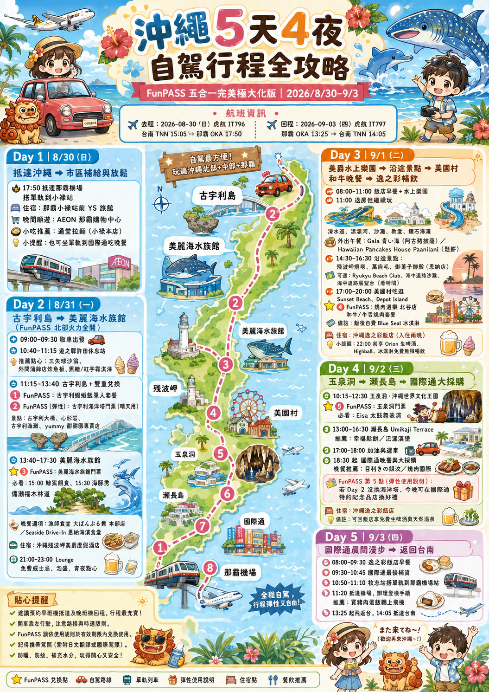

5 天 4 夜自駕旅程。今天看哪裡、怎麼走、花了多少，都在這裡。
沖繩旅遊總覽

旅程第一天
那霸小祿站前 YS 旅館
入境、拿行李後，搭單軌電車前往小祿站。
飲料、水果、乾糧與旅程補給；營業至 22:00。
小祿站旁步行約 2 分鐘，也可搭車去國際通逛街。
うなきの丼＆エビ刺し：鰻魚蓋飯、赤蝦、炸蝦與甜蝦，約 ¥3,780。
那霸市 50 條球道，另有桌球與遊戲區；08:00–24:00，全年無休。
每一天的路線與備註
旅途中的每一筆
旅程預算觀察
花費資料只會保存在這台裝置的瀏覽器。若要清除，可刪除下方紀錄。
即時手算，不必離開旅程